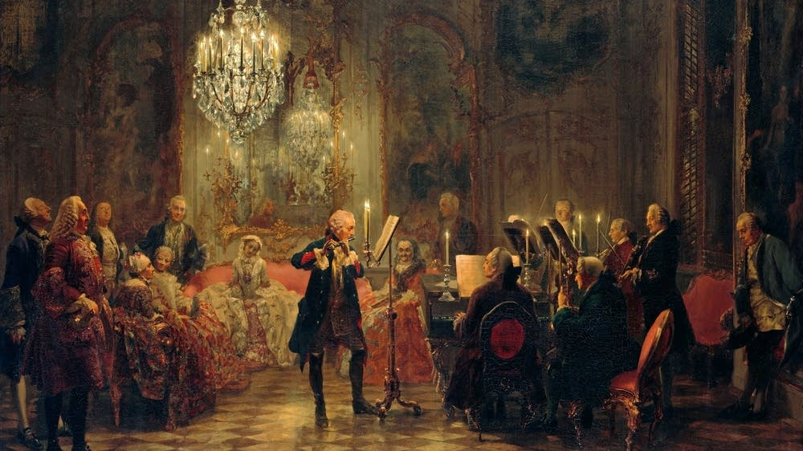
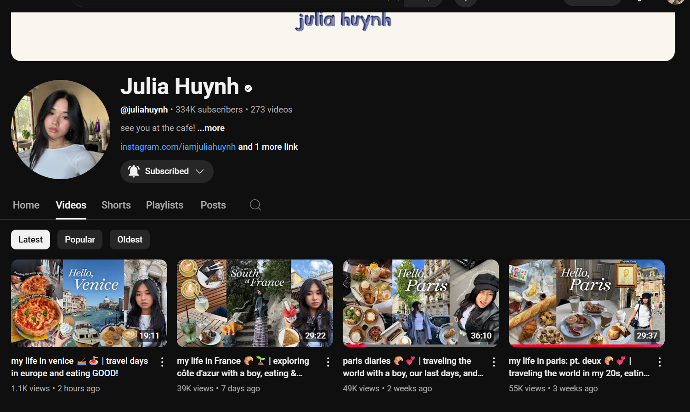

Music is a deeply enriching hobby that transcends mere entertainment, offering a unique blend of emotional, mental, and social benefits. For many, it serves as a therapeutic escape, where the strains of a melody or the rhythm of a beat can dissolve stress and elevate mood, acting as a sanctuary from the chaos of daily life. Whether playing an instrument, singing, or simply immersing oneself in carefully curated playlists, music becomes a powerful form of self-expression, allowing emotions to flow freely where words might fail. The cognitive rewards are equally compelling—learning music sharpens memory, enhances focus, and even boosts problem-solving skills, making it as stimulating for the mind as it is soothing for the soul. Beyond personal growth, music fosters connection, whether through collaborative jam sessions, choir rehearsals, or shared concert experiences, weaving bonds between people who might otherwise never meet. The beauty of music as a hobby lies in its infinite possibilities; there’s always a new genre to explore, a challenging piece to master, or a creative idea to compose, ensuring it never grows stale. From the solitary joy of strumming a guitar at home to the electrifying energy of performing on stage, music adapts to every personality and preference, becoming a lifelong companion that evolves alongside its enthusiast. It’s more than a pastime—it’s a universal language that enriches lives, note by note.
Art
Art is a profoundly fulfilling hobby that goes far beyond simple creativity—it’s a gateway to self-discovery, emotional release, and personal growth. For those who immerse themselves in drawing, painting, sculpting, or even digital design, art becomes a meditative practice, a way to quiet the mind and channel emotions onto a canvas or page. It offers a unique kind of freedom, where imagination has no limits and mistakes can transform into unexpected masterpieces. The act of creating art sharpens observation skills, enhances problem-solving abilities, and cultivates patience, as every stroke, shade, or texture requires thought and intention. Beyond its cognitive benefits, art serves as a universal language, capable of conveying complex feelings and stories without words, bridging gaps between cultures and perspectives. Whether sketching in a quiet corner, experimenting with bold colors, or collaborating with fellow artists, the process fosters both introspection and connection. The beauty of art as a hobby is its boundless adaptability—there’s always a new technique to learn, a different medium to explore, or a fresh inspiration to pursue, ensuring it never loses its magic. From the solitary joy of doodling in a sketchbook to the thrill of exhibiting work in a gallery, art meets people wherever they are, offering endless possibilities for expression and growth. It’s not just a pastime; it’s a lifelong journey of seeing the world differently and leaving a piece of oneself behind in every creation.

watching vlogs
Watching vlogs is more than just casual entertainment—it’s a modern-day hobby that blends storytelling, education, and connection into an engaging daily ritual. For many, tuning into favorite vloggers offers a sense of companionship, as creators share their lives, travels, skills, and thoughts in a way that feels personal and relatable. Whether it’s following a globetrotter’s adventures, learning cooking tricks from a home chef, or getting inspired by a productivity guru, vlogs turn passive screen time into an interactive experience where viewers feel like they’re part of a community. The appeal lies in their versatility; vlogs can be relaxing, motivational, or even educational, catering to whatever mood or interest strikes at the moment. They also provide a unique lens into different cultures, professions, and lifestyles, broadening perspectives without leaving home. Unlike scripted shows, vlogs often carry a raw, unfiltered charm—bloopers, unplanned moments, and genuine reactions make the content feel authentic and trustworthy. For those who curate their watchlist thoughtfully, vlogs can spark creativity, offer life hacks, or even serve as a catalyst for personal growth. The hobby is endlessly adaptable, with niche vloggers covering every topic imaginable, ensuring there’s always something new to discover. Far from mindless scrolling, watching vlogs can be a deliberate escape, a learning tool, or a source of inspiration—one video at a time.
